并行硬件与执行模型
从一条指令和一组数据出发，分清多核、SIMD 与 SPMD；再用等待与线程状态解释延迟隐藏，沿硬件图进入 GPU 的分组、驻留和访存，最后用手算与 GPU 情境判断资源为何空闲。
学完这一讲，你能
- 区分多核、SIMD、SPMD、SMT 与 SIMT，说明它们各自在描述什么
- 沿依赖关系和时间线，解释流水线、多线程怎样减少空等，以及为何不一定更快
- 在 CPU / GPU 结构图上辨认核心、SM、寄存器、缓存与显存，并对应线程的分工
- 用简单算例分析通道掩码、在途请求、驻留资源和访存地址带来的限制
- 面对“GPU 没跑满”，区分工作不足、就绪不足、通道闲置与带宽受限，提出有依据的判断
指令与执行资源
有很多并行工作，为什么芯片还是会空闲
第一讲用 FLOPs、字节数与 Roofline 建立了性能上界。这一讲走进上界下面的执行过程：硬件怎样持续拿到可以执行的工作？
本讲反复研究一个任务：对输入数组中的每个数，分别做同一套计算，得到对应的输出。
x 是有 N 个元素的输入数组，y 是输出数组，i 是元素下标；p 表示每个数都要经过的计算。
for (int i = 0; i < N; ++i)
y[i] = p(x[i]); // 各输出独立，p 内部仍有指令依赖
例如取 ，输入 x=[1,2]，就得到 y=[10,26]。
选这个例子，是因为它只包含乘法和加法，容易逐步追踪：不同输出可以独立计算；同一个输出内部，某些运算却要等待前面的结果。 后面就看硬件怎样安排这些工作。
始终追问：工作在哪里被卡住了？
| 沿着同一份工作往下看 | 这一段解决什么问题 |
|---|---|
| 指令与数据分组 | 哪些操作能独立推进，多核与 SIMD 怎样组合？ |
| 等待与线程状态 | 当前工作在等时，谁还能接着做？ |
| 数据供给 | 请求发得出来吗，长期供数跟得上吗？ |
| GPU 执行与综合判断 | 工作住在哪里、怎样发射，哪一层留下了空闲？ |
Q01 · 讨论
如果 N 有一百万，把它写成一百万个逻辑线程，就已经用满 GPU 了吗？
Q01
还没有。独立任务提供了并行的机会，但实际执行还要经过分组、资源分配与指令调度；数据或前一条指令的结果未就绪时，线程仍会等待。逻辑工作量和当周期真正完成的工作量之间，正是本讲要解释的距离。
一条指令要执行，先凑齐三样东西
寄存器（register） 是处理器核心内部用来暂存数据的小容量、高速存储。这里的 r0、r1、r2、r3 是四个寄存器的示意名称，数字只是编号，不代表里面存的值。
先看一个比上一页更简单的任务：把 x[0]=3 的平方写入 y[0]。开始前，已把两个地址准备好：
- r2 存放 x[0] 的内存地址，告诉处理器“去哪里读输入”；它存的不是输入数值 3。
- r3 存放 y[0] 的内存地址，告诉处理器“把结果写到哪里”。
方括号 [r2] 表示“访问 r2 中的地址所指向的内存”，不是数组的第 2 个元素。
| 步骤 | 示意指令 | 发生了什么 |
|---|---|---|
| 读取输入（load） | r0 = load [r2] | 按 r2 中的地址读取 x[0]，把数值 3 放进 r0 |
| 计算平方 | r1 = r0 × r0 | 用 r0 中的 3 计算 3×3，把结果 9 放进 r1 |
| 写回输出（store） | store [r3] = r1 | 把 r1 中的 9 写到 r3 指向的位置，即 y[0] |
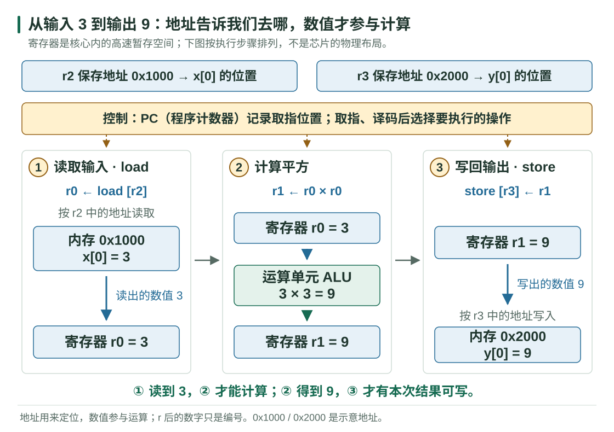
图中，控制决定执行哪条指令，运算单元完成计算，寄存器保存地址和数值。PC（Program Counter，程序计数器）记录取指位置；ALU（Arithmetic Logic Unit，算术逻辑单元）执行算术与逻辑运算。
有空闲的乘法器，也要等操作数准备好。 读取尚未返回时，r0 还没有拿到本次输入，依赖它的乘法就不能开始。
单核已经在努力：让一条指令流跑得更快
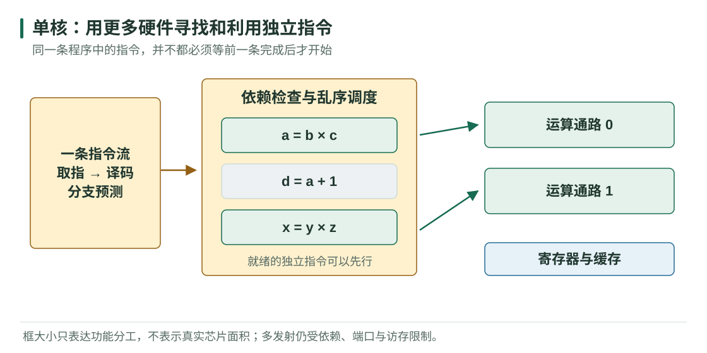
图中的功能分工，体现了加速单条指令流的几种办法：
- 多发射 / 超标量：一个周期可以把多条就绪指令送去执行，前提是所需执行资源可用。
- 乱序执行：前面的指令等待时，寻找后面已就绪的独立指令；仍要满足程序语义。
- 缓存与分支预测：让数据、指令尽可能及时到达。
这些能力不会自动消除依赖链，也不能从串行源码中无限地产生独立工作。
先排五条指令：发射宽度何时有用
发射（issue）：指令已取出、译码并等待调度；依赖满足、执行资源可用时，调度器选中它，送往执行单元。发射是开始执行这一步，不代表结果已经完成。
- 发射槽（issue slot）：某个周期中，允许发射一条指令的一次机会。
- 发射宽度（issue width）：每周期最多能发射多少条。宽度为 2，就把每个周期画成 2 个槽；若只有一条可发射指令，另一个槽就空着。
槽位用来描述发射能力，不是存放指令的格子，也不与某个固定运算单元一一对应。本页先用执行资源充足的教学模型，专门观察指令依赖怎样留下空槽。
计算 ，输入已在寄存器里。三个乘法独立，后面有两次加法。下面每行是一个周期，每格是一条指令的发射机会。
横读一行：该周期的 2 次发射机会。格内字母是指令编号，槽号不绑定某个运算单元。
| 周期 | 发射槽 0 | 发射槽 1 |
|---|---|---|
| 1 | X | Y |
| 2 | Z | A |
| 3 | B | 未发射 |
假设所有指令延迟均为 1 周期，下一周期可使用结果；执行资源足以接收本轮指令，无访存与调度开销。未发射只表示这次机会没用上，不表示整个核心内部都空闲。
Q02 · 讨论
把发射宽度从 1 改为 2，再改为 3，完成时间分别是多少？三发射为何没有继续缩短时间？
Q02
分别为 5、3、3 周期。双发射：[X,Y] → [Z,A] → [B]；三发射：[X,Y,Z] → [A] → [B]。关键路径有 3 条指令。第三个槽增加了能力，却没有增加最后两层的就绪工作。
看流水线内部：一条要 4 周期，为什么每周期能接一条
把一次乘法的内部工作分成四个阶段，每级用 1 周期。下面四次乘法 A、B、C、D 的输入都已准备好，彼此独立；它们依次进入同一个流水化乘法单元。
教学模型：四条指令的输入都已就绪、彼此独立；每级只完成一次乘法的一部分工作。省略访存及其他开销，不对应某款芯片的具体电路。
结果延迟（latency）：A 从 t=0 进入，到 t=4 完成，共 4 周期。发射间隔：A 在 t=1 移到第二级，空出的第一级就能接收 B，两次进入只隔 1 周期。
这条流水线每周期只有 1 个发射槽。 四级表示单元内部的四个阶段，不表示每周期能发射 4 条。流水线填满且持续有独立输入时，就能每周期产出一个结果。
Q03 · 讨论
A 要到 t=4 才完成，为什么 B 在 t=1 就能进入？这是否表示每次乘法只需要 1 周期？
Q03
A 已移到第二级，第一级可以接收 B；而 B 的输入已就绪，不需要 A 的结果。A 在 t=4 完成，B 在 t=5 完成，每条仍需 4 周期，但相邻结果只隔 1 周期。同时在途的多条指令，处于不同流水阶段。
Horner 形式：省下运算，仍有依赖
流水线具备每周期接收一条指令的能力，程序能否提供输入已就绪的工作？用下面的多项式辨认两种关系：同一个输出内部的依赖，不同输出之间的独立。
继续开场的任务：从输入数组 x 取出 v = x[i]，计算多项式 p，把结果写入输出数组的 y[i]。x 只读，且与 y 使用不同的存储空间。
逐层提出 v，把多项式写成“乘一次 v，再加下一个系数”的嵌套形式，就是 Horner 形式（霍纳形式）。它复用中间结果，省去单独计算各个幂次再逐项相加的工作。这里从最高次项的系数 1 开始，依次加 2、3、4：
float v = x[i]; // 当前输入
float r = 1.0f; // r 保存计算到一半的结果
r = r * v + 2.0f;
r = r * v + 3.0f;
r = r * v + 4.0f;
y[i] = r; // 写回当前输出
代入 v=2 手算： r 从 1 开始，经过 1×2+2=4 → 4×2+3=11 → 11×2+4=26，所以这一项的输出是 26。后一行必须使用前一行算出的 r，这就是一条依赖链。
本页要分清：同一个输出内部，按这条链计算就必须等待；不同输出之间，可以独立推进。 因而，判断运行时间既要看运算量，也要看依赖关系。
Q04 · 讨论
x[0]=1、x[1]=2 时，计算 y[1] 需要用到 y[0] 吗？计算 y[1] 的过程中，11 又必须等哪个中间结果？
Q04
计算 y[1] 不需要 y[0]。两条计算路径分别是：
- x[0]=1：r0 按
1 → 3 → 6 → 10更新，得到 y[0]=10。 - x[1]=2：r1 按
1 → 4 → 11 → 26更新，得到 y[1]=26。
11 来自 4×2+3，因此必须等本条路径先算出 4。两条路径之间没有数据依赖；每条路径内部，后一步都要使用前一步的结果。
把四个输出交错计算：流水线怎样少空等
上一页找到了不同输出之间的独立性，现在只改变它们的执行安排。固定 x=[1,2,3,4]，计算同一个 p，得到 y=[10,26,58,112]。用 r0、r1、r2、r3 分别保存四个输出的中间结果；每个 r 从 1 开始，更新三次。
假设在一个 CPU 线程、一个流水化运算单元上执行。每次 r*v+c 中，v 是相应输入，c 依次是 2、3、4；这一步用一条 FMA（Fused Multiply-Add，融合乘加） 完成，即把乘法和加法作为一个运算、最后舍入一次。
沿用前面的教学时序：结果延迟 4 周期，每周期最多接收 1 条就绪指令，输入与中间值已在寄存器中。两排执行相同的 12 条 FMA，只改变四个输出之间的安排；图中每格是相应周期的唯一发射槽，沿横轴是不同周期。

沿下排读：t=0 发射 r0 的第一步；等待它时，t=1、2、3 分别发射 r1、r2、r3 的第一步；t=4，r0 的第一步已经完成，恰好可以接着做第二步。
这就是指令级并行（ILP，Instruction-Level Parallelism）：同一个线程中，多条独立指令的执行可以重叠。这里换的是计算链：r0 在等，先推进独立的 r1；r0～r3 都属于同一个线程。 四个输出分别完成，无需合并，也没有缩短单条 FMA 的延迟。
求和怎样产生独立工作：从一个累加器到多个部分和
上一页的四个输出各自独立。这一页要把数组 x 的所有元素加成一个总和 s：可以让一个累加器从头加到尾，也可以先形成多个部分和，最后合并。
先取四个输入 a、b、c、d，所有累加器初值为 0。假设一次加法用一步，资源足够让四次独立加法同时执行，输入均已就绪。 这里数的是依赖层数，与上一页“每周期只接收一条指令”的时序模型不同。
| 步骤 | 一个累加器：每次都等新的 s | 四个部分和：先独立更新，再两两合并 |
|---|---|---|
| 第 1 步 | s = 0+a | 同时算 s0=0+a、s1=0+b、s2=0+c、s3=0+d |
| 第 2 步 | s = s+b | 同时算 u=s0+s1、v=s2+s3 |
| 第 3 步 | s = s+c | s = u+v，完成 |
| 第 4 步 | s = s+d，完成 | — |
“4 步与 3 步”在上述条件下成立，步数不等于加法次数。 左边做 4 次加法；右边做 7 次，但分成 3 层完成。最后必须按 (s0+s1)+(s2+s3) 两两合并；写成 s0+s1+s2+s3 默认左结合，合并本身仍有三层依赖。
如果只求这四个数的和，可以直接计算 (a+b)+(c+d)，两步就够。上表保留与 0 相加，是为了对照累加器的更新过程。
多个部分和更适合长数组。 每读入一组四个数，就分别更新 s0、s1、s2、s3；这些变量跨组保留，整个数组处理完后才合并一次。等待一条累加链的结果时，可以推进其他链。
当累加依赖限制速度、硬件能利用独立工作时，多个累加器更有机会加速；数组很短或内存带宽已成为瓶颈时，未必更快。重新分组也改变了浮点加法顺序，结果可能不同。
多核：让多条指令流各自前进
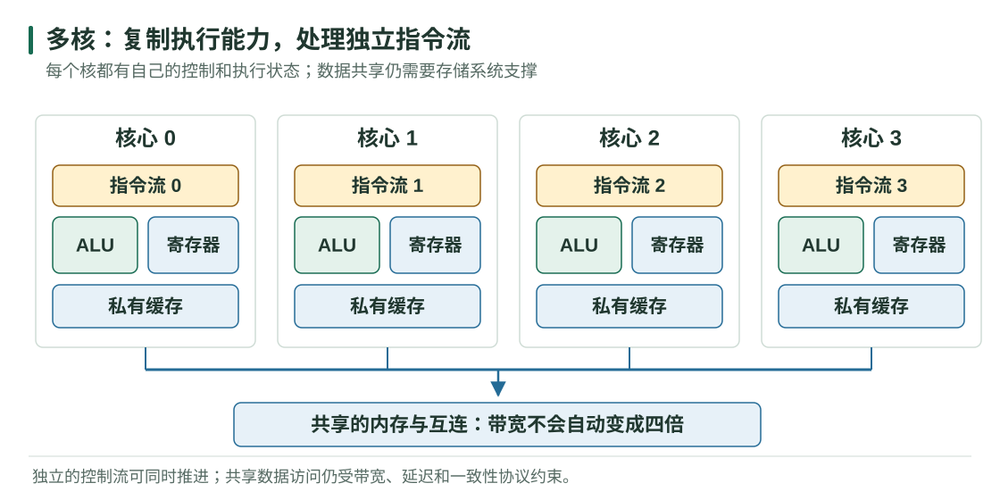
每个核心都有自己的指令控制与执行状态。核心 0 做乘法时，核心 1 可以做加法，也可以走到另一条分支。 程序计数器（PC，Program Counter）分别记录各自执行到哪里；它们不必保持相同进度。
仍做逐元素计算 y[i]=p(x[i])：8 个元素可以分给 4 个工作线程，各负责 0–1、2–3、4–5、6–7。这些线程若被调度到不同核心，就能独立推进；同一时刻不必计算同一个步骤。
这种多条指令流处理多份数据的能力称为多指令多数据（MIMD，Multiple Instruction, Multiple Data）。增加独立控制带来灵活性，也要付出硬件面积和能耗；多个核心仍可能争用内存带宽。
SIMD：让一条指令带动多个数据通道
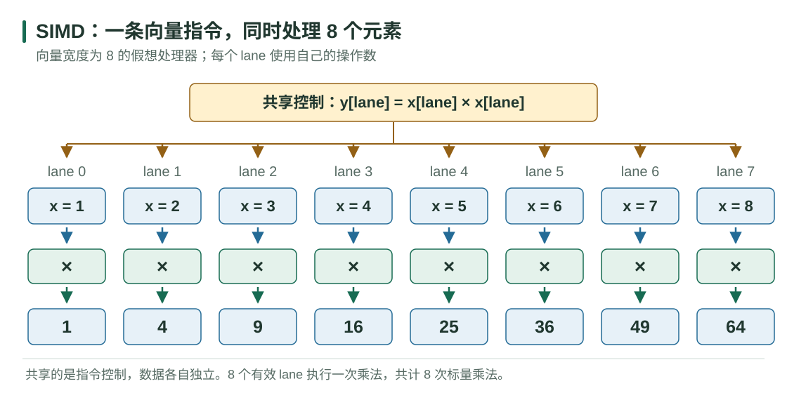
单指令多数据（SIMD，Single Instruction, Multiple Data）：用一条向量指令，对多个数据元素执行同一种操作。图中把 p(x) 简化为平方；金色是指令控制，绿色是运算，蓝色是数据。
一个 CPU 线程发出向量乘法，便可把 [1,2,3,4,5,6,7,8] 变成 [1,4,9,16,25,36,49,64]。其中的 lane（通道） 是向量里的元素位置，不是一个独立 CPU 核心，也不需要创建 8 个软件线程。
为什么不直接再放 8 个核心？因为同一批数据都做乘法时，可以共享取指、译码等控制开销，把更多资源用于数据运算。代价是：这一条向量指令不能让 lane 0 自选乘法、lane 1 自选加法；分支不同需要另行组织执行。
一条向量指令，究竟算了多少次
对普通定宽向量，寄存器位宽与元素格式共同决定通道数：128 bit 可容纳 4 个 FP32，256 bit 可容纳 8 个 FP32。
// 数学示意：每个有效通道各完成一次乘加
r[lane] = a[lane] * b[lane] + c[lane];
指令数、有效通道数和 FLOPs，是三本不同的账。 算吞吐时，还要知道这种指令的持续发射率。
以 8 个 FP32 通道全部有效 的向量 FMA 为例，按乘法、加法各计 1 FLOP：
| 统计对象 | 计算过程 | 结果 |
|---|---|---|
| 一个通道 | 1 次乘法 + 1 次加法 | 2 FLOPs |
| 一条向量 FMA | 8 个通道 × 2 FLOPs | 16 FLOPs |
| 假想核心每周期持续发射两条向量 FMA | 2 条 × 16 FLOPs | 32 FLOP/周期 |
每周期的运算量再乘以时钟频率，才得到 FLOP/s。 若时钟频率为 f Hz，这个假想核心的理论峰值就是 32 × f FLOP/s。
上述吞吐假定两条指令有足够独立且已就绪的操作数，对应执行端口可用；每周期能发射两条，不代表每条只需一个周期就完成。
多核与 SIMD，可以一层套一层
多核复制独立控制；SIMD 让一条指令处理更多元素。 它们是可以组合的两个维度。
仍以 8 个元素求平方为例，只统计乘法指令，不计读写和循环开销：
| 执行方式 | 工作怎样分 | 乘法怎样发出 |
|---|---|---|
| 4 核，每核按标量算 | 每核负责 2 个元素 | 每核 2 条标量乘法 |
| 1 核，8 通道 SIMD | 8 个元素组成一个向量 | 1 条向量乘法 |
| 2 核，每核 4 通道 SIMD | 每核负责一个 4 元素向量 | 每核 1 条向量乘法 |
下图把这种组合扩展为假想的 16 核 × 每核 8 通道。实际时间还取决于延迟、发射率与数据供给，不能只数指令。
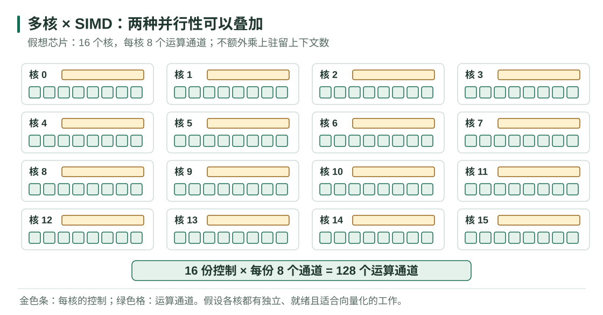
单线程也可以用 SIMD；多线程不保证用了 SIMD。 编译器是否生成向量指令，以及线程是否分布到不同核心，是两件需要分别确认的事。
在真实 CPU 图上，找到核心、寄存器与 SIMD
以 AMD Zen 3（2021 年公开架构资料） 为例，按图集顺序从芯粒放大到核心，再看浮点执行路径。CCD（Core Complex Die，核心复合体芯粒）可以包含多个核心；它与整颗 CPU 封装不是同一层次。
图2 → 图3：看图2右下方紫红色的 FLOATING POINT（浮点）区域，已用绿色虚线框出。 图3主要展开这里的浮点调度器、寄存器和运算单元，并补充加载 / 存储与结果转发通路；它按功能重新排版，位置不与图2逐块对齐。
原图出处与标注说明
AMD · Next Generation Zen 3 Core · Hot Chips 33 (2021) · PDF 第 18 页
从厂商公开资料提取图区；保留原图内容。中文框选、编号与解释为本课程添加；原图版权归原权利人。
打开未标注原图 ↗多核对应反复出现的物理核心；SIMD对应核心内部成组处理数据的向量路径。256 位可以容纳 8 个 FP32 元素，但不能把它数成 8 个独立核心。
照片与布局图帮助判断“部件在哪里”，功能结构图帮助理解“部件做什么、怎样连接”。图中原有英文由中文编号说明对应，其他细节暂不展开。
分组、掩码与数据映射
SPMD：大家读同一份程序，各自处理不同数据
单程序多数据（SPMD，Single Program, Multiple Data）：写一份工作程序，运行多个实例；各实例通过自己的编号或数据范围领取工作。相同的程序，不要求相同的分支或执行进度。
用熟悉的 C++ 函数描述每个实例要做的事。x 是只读输入，y 是独立的输出数组，id 是我们传入的 0–3 号。为看清分支，暂把前面的多项式换成“正数乘 2，否则加 1”。
void worker(int id, const float* x, float* y) {
float v = x[id];
if (v > 0) y[id] = 2 * v;
else y[id] = v + 1;
}
让 0–3 号四个线程分别执行这个函数。程序相同，编号与输入不同：
| 实例编号 id | 输入 x[id] | 本实例执行的分支 | 输出 y[id] |
|---|---|---|---|
| 0 | 1 | 乘 2 | 2 |
| 1 | −2 | 加 1 | −1 |
| 2 | 3 | 乘 2 | 6 |
| 3 | −4 | 加 1 | −3 |
最终得到 y=[2,-1,6,-3]，每个输出只由一个实例写入。
这展示了 SPMD 的组织方式，没有指定 SIMD 指令，也不保证四个线程同时占据四个核心。如此小的任务，创建线程的开销通常远大于计算本身。
同一份程序，怎样落到不同执行方式上
SPMD 描述“程序怎样组织”，MIMD、SIMD 描述“指令与数据怎样执行”。 同一份程序、多个实例，并不规定每个实例必须独占一个核心，也不规定所有实例此刻执行同一条指令。
沿用上一页的 worker 和输入 [1,-2,3,-4]：0、2 号乘 2，1、3 号加 1。看同一种分工怎样落到不同执行方式上：
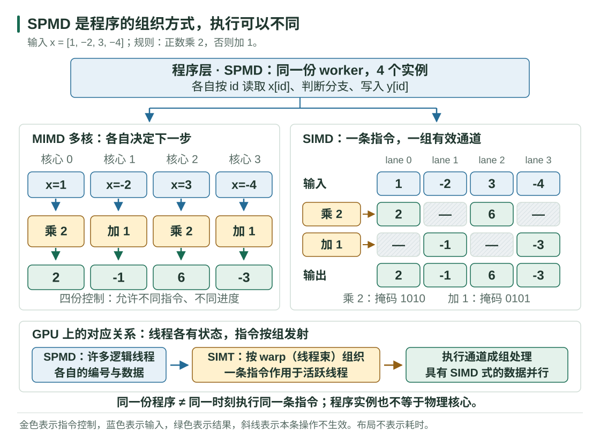
- 多核路径（MIMD）：四个 CPU 线程分别在四个核心上执行同一份
worker，各自选分支、推进指令。MIMD 允许不同指令流，不要求写不同的源程序。 - 向量路径（SIMD）：把同一计算向量化，用掩码
1010对 0、2 通道乘 2，再用0101对 1、3 通道加 1；1 表示该通道参与。两边都得到[2,-1,6,-3]，但四个普通 CPU 线程不会因此自动合成一条向量指令。 - GPU 路径（SIMT）：许多线程执行同一份 GPU 函数，仍是 SPMD。单指令多线程（SIMT，Single Instruction, Multiple Threads）把线程成组组织；NVIDIA 将 32 个线程组成一个线程束（warp），一条指令作用于其中当前参与执行的线程。
SPMD 可以映射到 MIMD，也可以映射到 SIMD / SIMT；这些概念不在同一层，不是互斥选项。 GPU 的成组执行具有 SIMD 式的数据并行特征，同时保留每个线程各自的状态与分支条件。
先检查写入：不同实例，会不会写到同一位置？
上一页的 worker 用 y[id] 写结果，每个实例负责不同位置。如果改了写入地址，即使实例编号不同，也可能争写同一个位置。
下面的 parallel_for 表示各次循环可以并行执行，是示意写法；输入数组 x 与输出数组 y 分开存放：
parallel_for (int i = 0; i < N; ++i) {
if (i > 0 && x[i] < 0)
y[i - 1] = x[i];
else
y[i] = x[i];
}
取 N=2、x=[1,-2]，直接代入：
| 实例 | 条件判断 | 实际写入 |
|---|---|---|
i=0 | i > 0 不成立，走 else | y[0] = 1 |
i=1 | i > 0 且 x[1] < 0，走 if | y[1-1] = -2，也就是 y[0] = -2 |
两个实例读取不同输入，却都要写 y[0]：分工发生了冲突。 顺序循环有明确的先后；直接改成并行后，就不能依靠“后一次覆盖前一次”。若用普通 C++ 线程无同步地执行这两次写入，就构成数据竞争（data race），行为未定义；偶尔得到期望结果也不能证明正确。
并行化前先确定每个输出由谁负责。若确实需要多个实例共同更新，必须先定义合并规则，再选择相应的协作与同步方式。
再检查读写：本次写入，会不会改变下一次输入？
每次写入不同位置，仍不足以保证可以并行。还要检查：写入的位置，会不会被另一次迭代读取。
src 是读取的起点，dst 是写入的起点，n 是处理的元素数。不同的指针名字不保证指向不同数组：
void shift_add(float* dst, const float* src, int n) {
for (int i = 0; i < n; ++i) dst[i] = src[i] + 1;
}
设底层数组 buf=[10,20,30]，src 指向 buf[0]，dst 指向 buf[1]，处理 n=2 个元素。这就是 dst = src + 1：写入起点比读取起点向后移了一个元素。
此时 dst[0] 和 src[1] 是同一个位置 buf[1]。按原循环顺序执行：
| 迭代 | 实际读取 | 实际写入 | 数组变为 |
|---|---|---|---|
i=0 | src[0]，即 buf[0]=10 | dst[0]，即 buf[1]=11 | [10,11,30] |
i=1 | src[1]，即刚被改成 11 的 buf[1] | dst[1]，即 buf[2]=12 | [10,11,12] |
若把原始的 10、20 一起读出，再同时加 1 写回，就会得到 [10,11,21]，不再等价于原来的顺序循环。这里有跨迭代依赖：后一次读取需要前一次写入的结果。
这也解释了自动向量化为什么需要检查地址关系：编译器不能只看循环长得整齐，就把它改成 SIMD。若两段数组不重叠，这项依赖就消失；若无法直接证明，可以先做运行时重叠检查，再选择向量或顺序路径。
两页合起来，先查写入是否冲突，再查写入是否影响别人的读取；确认分工正确后，才谈怎样执行得快。
SIMD 怎样取数更高效：看同一轮的地址是否相邻
前两页检查“能不能正确地并行”；现在进一步看：工作分得一样多，怎样安排数据，才能让 SIMD 更高效地读取？
假设对 64 个元素计算 y[i]=2*x[i]，使用 8 条 SIMD 数据通道（lane），分 8 轮处理，每个通道处理 8 个元素。这里的通道属于同一条向量指令，不是 8 个独立的 CPU 工作线程。
先读图：数字是数组下标，不是元素的值。 横着看一行，是本轮 8 个通道共同读取的元素；竖着看一列，是一个通道先后处理的元素。
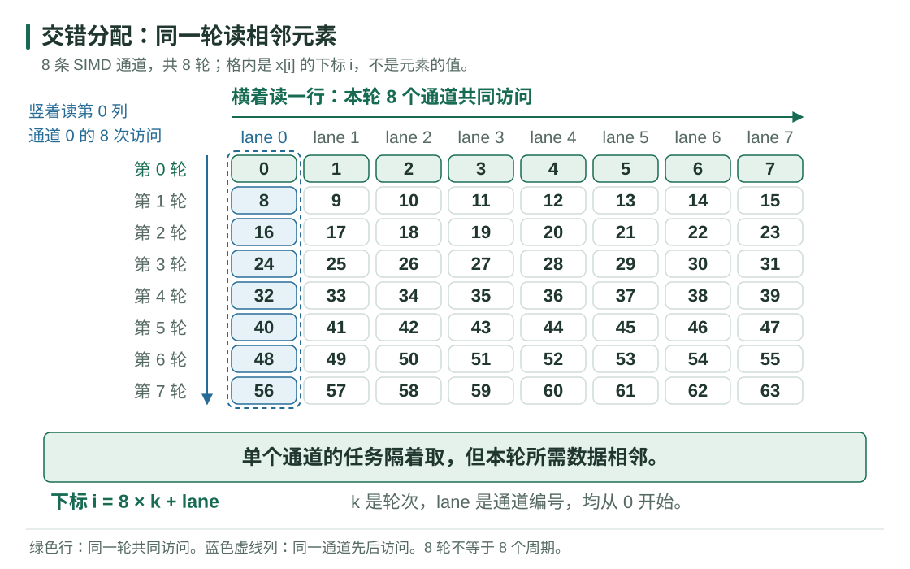
两种分工都覆盖 0–63，不重复、不遗漏，工作量也相同。区别在于一次向量操作需要哪些数据：
| 观察方向 | 交错分配 | 每个通道领连续块 |
|---|---|---|
| 横看第 0 轮 | 0,1,2,3,4,5,6,7 | 0,8,16,24,32,40,48,56 |
| 横看第 1 轮 | 8,9,10,11,12,13,14,15 | 1,9,17,25,33,41,49,57 |
| 竖看通道 0 | 0,8,16,…,56 | 0,1,2,…,7 |
第一种本轮需要的元素在内存中相邻，便于一次连续向量加载；第二种本轮要从分散的位置取数，可能需要聚集读取（gather），把这些元素收集到一个向量里，通常成本更高。
一个通道先后访问连续，不等于同一条 SIMD 指令的各通道访问连续。 这里比较的是取数方式，不能直接推出固定加速倍数；实际效果还取决于缓存与硬件。
如果外层还有多个 CPU 工作线程，可以先给每个线程分一大段，再让线程内部的 SIMD 通道在每轮处理相邻元素。
给 CPU 线程分大块，给向量通道分相邻元素
两种“分块”位于不同层次，可以同时成立。64 个元素分给 2 个 CPU 工作线程，每个线程使用 8 条 SIMD 通道：
| 层次 | 工作线程 0 | 工作线程 1 |
|---|---|---|
| 线程拥有的区间 | [0,32) | [32,64) |
| 第一次向量操作 | 0…7 | 32…39 |
| 第二次向量操作 | 8…15 | 40…47 |
外层让核心各领一段，内层把相邻元素放进同一次向量指令。因此，工作线程数和向量宽度是两层不同的组织选择；后面读性能图时也要分开看。
分支可以执行，代价藏在被关闭的通道里
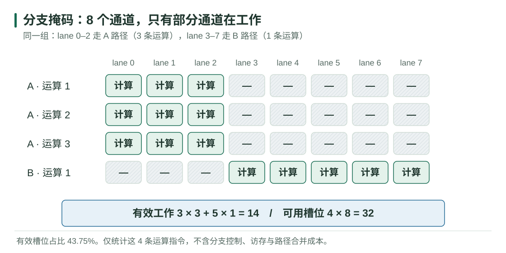
同一组里，走不同路径的实例分批执行；不属于当前路径的通道被掩码关闭。
以 8 通道为例：3 个实例的路径有 3 条算术指令，另 5 个实例的路径有 1 条。假设两条路径依次执行，仅统计算术通道槽：
关键在于同组内的路径差异。统一分支不必执行另一条空路径；短分支也可能由编译器转为谓词指令。
Q05 · 讨论
如果把走同一路径的元素放到同一组，为什么可能更快，却还不能直接用 1/43.75% 预测加速比？
Q05
分组可能让更多通道同时做有效工作，但也要支付判断、重排、额外读写和恢复输出顺序的代价，并可能改变局部性。43.75% 只描述这段分支的算术槽，未涵盖整个程序时间。
循环长短不同：短任务做完，通道为什么闲着？
上一页是不同通道走不同分支；这一页即使每个任务都做加法，也可能出现空闲，因为各任务需要的循环次数不同。
有 16 个互相独立的任务，每个任务对自己的数反复加 1：8 个短任务各做 2 次，8 个长任务各做 8 次。用 8 条 SIMD 通道，每组放 8 个任务，两组先后计算。
每轮给尚未完成的任务各加一次。短任务做完后，相应通道被掩码关闭；本组仍有长任务，就继续下一轮。先观察第 1 轮，再切到第 3 轮，最后切换分组方式：
两组使用同一组 8 条通道先后计算；选择器观察的是各组内部的轮次。每轮为仍未完成的任务各做一次加法，已完成的任务不再参与。轮次不是硬件周期；未计判断、重排、恢复顺序和访存成本。
| 分组方式 | 组 0 | 组 1 | 两组合计 |
|---|---|---|---|
| 长短混排 | 4 短＋4 长，需要 8 轮 | 4 短＋4 长，需要 8 轮 | 16 轮 |
| 按长度分组 | 8 个短任务，需要 2 轮 | 8 个长任务，需要 8 轮 | 10 轮 |
两种方式都完成 次加法。减少的是发出的向量操作轮数和空着的通道位置，必要的计算没有减少。 本模型不在组内给已完成的通道塞入新任务。
把长度相近的任务放在一起，称为按长度分桶。它提供了一种减少空闲的办法；获知长度、重排数据、恢复输出顺序也可能花时间，稍后把这些成本一起算。这里的 16 轮与 10 轮不是硬件周期数，也不能直接保证实际快 1.6 倍。
最后一组不满：没有任务的通道必须关闭
上一页的短任务是做完后退出；这里每个任务工作量都相同，但最后一组从一开始就没有足够的任务。
以逐元素计算 y[i]=2*x[i] 为例，这次有 35 个元素，合法下标是 0–34。每组处理 8 个，前 4 组处理 32 个，最后一组只剩下标 32、33、34：
尾部掩码只允许最后一组的前 3 条通道读写；其他 5 条通道不访问不存在的元素。也可以先用向量处理前 32 个，再逐个处理最后 3 个，称为标量尾循环。
5 组一共有 40 个通道位置，其中 35 个对应真实元素，有效比例为 。这个比例只描述尾部空位，不是实际速度或整颗处理器的利用率。
把元素数写成 40，不等于就能安全地多算 5 个。 若采用填充（padding），必须实际准备足够的输入和输出空间，并保证补充值不改变结果。例如本页的独立逐元素计算可只保留前 35 个输出；求平均值时，补 5 个零后再除以 40，就改变了原来的含义。
至此有三种不同的空位来源：分支不同、完成时间不同、任务数量不足一组。下一页再看，减少这些空位是否值得付出额外成本。
通道更满之后，总耗时真的更短吗？
前面看到按路径或长度重新分组，可以减少通道空闲。但为了分组，往往还要分类、搬动数据，并把结果恢复到原来的顺序。这些都属于完成同一任务的总成本。
用一个教学时间算例：原来的计算需要 80 毫秒；重新分组后，计算本身降到 50 毫秒，省下 30 毫秒。先保持输入和所需输出相同，再把额外工作加回来：
| 方案 | 计算时间 | 分类、重排、恢复顺序 | 总时间 | 与原方案相比 |
|---|---|---|---|---|
| 原方案 | 80 ms | 0 ms | 80 ms | 基准 |
| 整理成本较小 | 50 ms | 18 ms | 68 ms | 快了 12 ms |
| 整理成本较大 | 50 ms | 40 ms | 90 ms | 慢了 10 ms |
省下的计算时间，大于新增的全部成本，优化才划算。 两种新方案的计算部分同样快，最终结论却相反。这些时间是独立的假设数据，不是把前面的向量轮数换算成毫秒。
填充尾部也遵循同样的判断：省掉边界处理的代价，是否大于多算和多搬数据的代价？此外，第18页提醒过，重排任务还可能改变访存的连续性。
目标是更快完成同一个任务。通道利用率只是解释性能的一个线索。 接下来，即使所有通道都有任务，数据没到、结果没就绪，运算单元仍可能等待。
等待与线程状态
通道都有效，运算单元仍可能无事可做
刚才的分支、变长循环和尾部，讨论的是“已经发出一条指令，其中多少通道做了有效工作”。接下来换一个问题：即使所有通道都有任务，下一条指令也可能还不能发射。
float v = x[i]; // load 可能要等待
float r = v * v + 1.0f; // 必须先拿到 v
out[i] = r;
如果一个核心只保留这份工作，读数据期间即使算术逻辑单元（ALU，Arithmetic Logic Unit）空闲，也无法执行依赖 v 的计算。
减少等待有两个方向：让这份数据更早到，或者在它没到时先推进另一份独立工作。
硬件多线程：从另一个线程找工作
回顾第7页： r0 的下一步还要等，先推进独立的 r1。r0～r3 是同一个线程中的四条计算链，这叫指令级并行（ILP）。
如果这个线程已经没有就绪指令，还能从哪里找工作？让同一个核心保留多份线程状态，从另一个线程中选择就绪指令。 这就是硬件多线程的思路。
上下文（context） 保存程序执行位置、寄存器中的中间结果等状态。图中 T0、T1 各有一份上下文，驻留在片上，共享核心的运算单元。
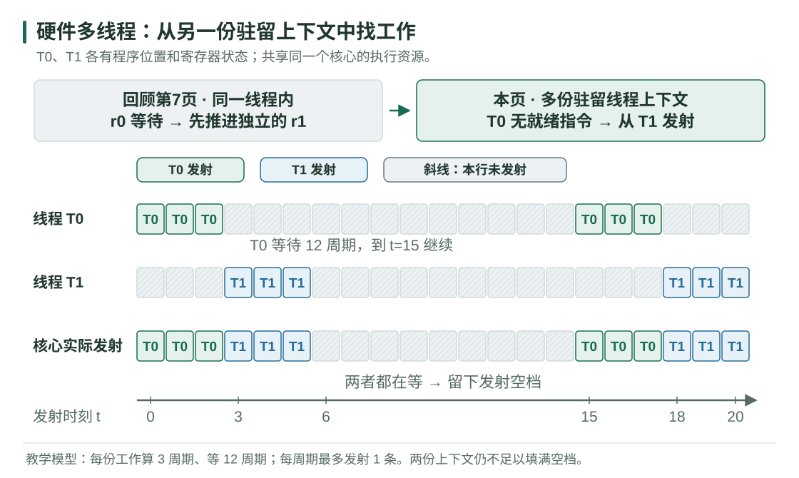
沿时间轴读：T0 先发射 3 周期的计算指令，随后等待数据；T1 在此期间发射自己的计算指令。本图每周期只有 1 个发射槽，由 T0、T1 共享；两份上下文不等于两个槽。 两个线程都在等待时，这个槽就空着，T0 的等待本身没有缩短。
- 驻留（resident）：状态已经在片上，但可能正在等依赖。
- 就绪（ready）：下一条指令的依赖满足，等待被选中。
- 发射（issued）：调度器选中了它，并且执行资源允许。
区别在独立工作的来源：第7页来自同一线程，本页来自不同线程。 两者可以配合使用，也都可以帮助覆盖计算或访存依赖造成的等待。多份上下文没有复制同样多的运算单元；这里也没有操作系统把线程换入换出。
把等待画出来：1、2、5 份工作有什么区别
假想核心每周期只发射一条算术指令。每个上下文重复：计算 C 周期 → 等待 L 周期 → 继续计算。
每周期共享 1 个算术发射槽，即最多发射 1 条算术指令；每份上下文计算 C 周期后等待完整 L 周期，轮转选择就绪上下文。访存由独立通路发起，切换免费且带宽无限；有限窗口比例可能偏离稳态。这里隐藏等待，没有缩短 L。
Q06 · 讨论
C=3、L=12 时，1、2、5 个上下文的稳态算术利用率分别是多少？第五个上下文缩短了访存延迟吗？
Q06
分别为20%、40%、100%。5份工作可以让某份等待时一直有其他算术可做；每份等待仍为12周期。这里访存通路独立、切换免费且带宽无限，不是完整GPU模拟器。
隐藏等待需要多少独立工作
沿用模型：每份上下文连续计算 C 周期，再等待 L 周期；一个算术发射槽，轮转选择就绪上下文，切换免费且带宽不受限。
单份工作的计算占比是 。T 份工作能提供的稳态算术利用率为：
要避免空档，其他 T−1 份工作的计算，需要覆盖本份工作的等待：
C=3、L=12 时需要 5 份；C=6、L=12 时需要 3 份。更多线程与每线程更多独立工作，都可能帮助供给指令。
Q07 · 讨论
把 C 人为增大也能让利用率上升。为什么“图更绿了”不一定是优化？
Q07
如果增加的是本来不需要的计算，总耗时可能变长。真正的优化应把必要且独立的操作组织起来，或者减少等待与数据搬运，并以相同任务的完成时间检验。这里 C/L 的单位是周期/周期，也不是 FLOP/B 的计算强度。
SMT 是什么：一个物理核心，保留多份线程状态
同时多线程（SMT，Simultaneous Multithreading）：一个物理核心维护多个硬件线程上下文，并允许同一周期从多个线程中选择就绪指令，共享核心的执行资源。
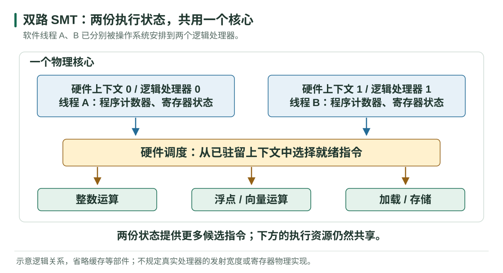
- 各自保留的状态：执行到哪里的程序计数器，以及寄存器等架构状态。A、B 可以运行不同程序、走不同分支。
- 共享的资源：核心中的算术单元、向量单元、访存通路，以及部分缓存和调度资源；如何共享取决于具体处理器。
操作系统把每个硬件线程看成一个逻辑处理器。例如 8 个物理核心都开启双路 SMT，就提供 16 个逻辑处理器，算术单元数量却不会因此翻倍。Intel 的超线程（Hyper-Threading）是一种 SMT 实现。
回看前面的 Zen 3 核心原图：这一代每核支持双路 SMT，但两条硬件线程仍共享图中的执行资源；不会多出一个完整物理核心。
SMT 填补的是空槽，不是把核心变成两个
回顾发射槽：它是一个周期中发射一条指令的一次机会。前面的交错模型每周期只有一个槽；下面改用每周期两个槽的假想核心。SMT 允许同一周期的两个槽接收来自不同线程的指令，不必等 A 完全停住，B 才能参与。
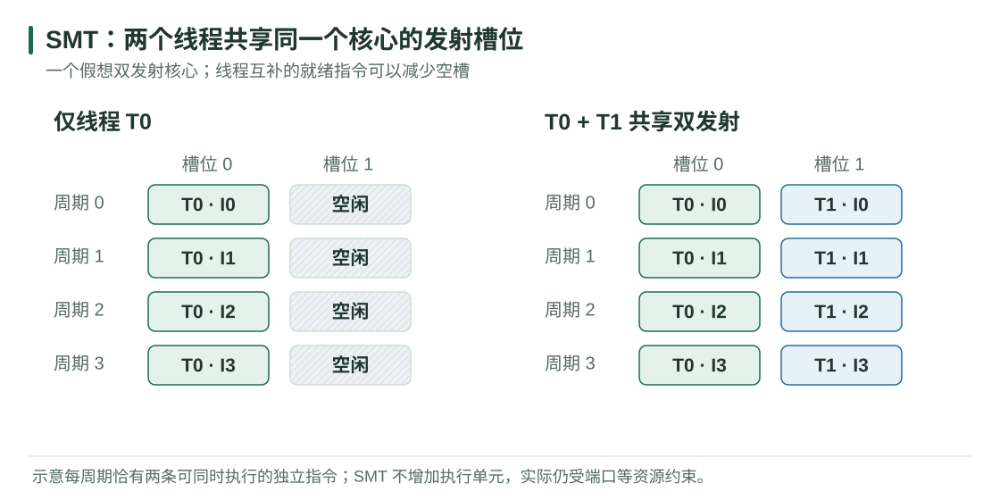
图中每格是一次发射机会，T0·I0 表示线程 T0 的第 0 条指令。假设每周期最多发射 2 条，且两条指令能使用兼容的执行资源：T0 每周期只提供 1 条时，T1 可以填上另一个空槽。
如果 T0 已经每周期用满这两个槽，加入 T1 也不会把上限变成 4 条。两者争用相同算术端口或缓存时，单个线程可能变慢，整体吞吐也未必提高。
SIMD 是一条指令处理多份数据；SMT 是多个线程的指令共享一个核心。 两个 SMT 线程都可以使用 SIMD，但要共享这个核心的向量执行资源。
SMT 与上下文切换：选择指令，还是更换线程
操作系统（OS，Operating System）上下文切换：让某个逻辑处理器从执行软件线程 A，改为执行软件线程 C；保存 A 继续执行所需的状态，恢复 C 的状态。
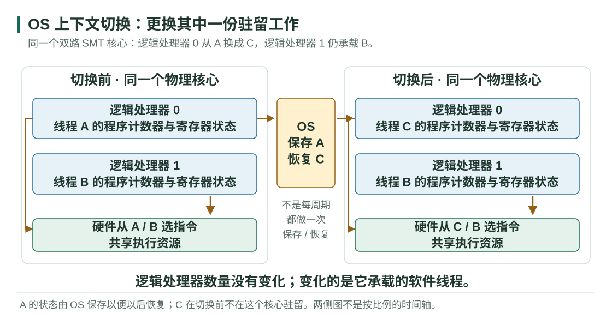
| 比较 | SMT 中选择指令 | OS 上下文切换 |
|---|---|---|
| 做什么 | 从已经驻留的 A、B 中挑就绪指令 | 把逻辑处理器 0 上的 A 换成 C |
| 状态在哪里 | 两份状态都已在硬件中 | 保存 A、恢复 C，涉及软件管理的状态 |
| 主要代价 | 共享端口、缓存等资源的竞争 | 调度与保存/恢复；还可能影响缓存局部性 |
硬件挑选 B 的指令时，不需要先把 A 的寄存器保存到内存，再加载 B。OS 切换也不等于复制整个线程的内存或清空所有缓存。
SMT 提供的硬件上下文数量有限；软件线程可以更多，所以 SMT 与 OS 切换可以同时存在。图中 A→C 是一次 OS 切换，逻辑处理器 1 仍承载 B。
都叫“等待”，究竟由谁接着做
一次普通缓存未命中，不会自动触发 OS 上下文切换。 线程的 load 指令可能等待数据，硬件仍可推进该线程的其他独立指令，或另一个 SMT 上下文的就绪指令。
| 发生的事情 | 谁处理 | 等待意味着什么 |
|---|---|---|
| A 的普通 load 等数据 | 硬件调度 | A 的依赖指令未就绪，未必被 OS 挂起 |
| A 的阻塞读操作等待输入 | OS 调度 | A 暂时不可运行，可把处理器交给其他就绪线程 |
| A 的时间片用尽，且需轮换 | OS 调度 | A 仍可能有工作，但要让其他线程获得运行机会 |
Q08 · 讨论
一个核心的两个 SMT 上下文已承载 A、B，C 仅在 OS 就绪队列中。A 的 load 等待数据、B 有就绪指令：硬件为什么能直接推进 B，却不能直接拿 C 的指令来填空槽？
Q08
B 的程序计数器、寄存器等状态已经驻留，硬件可在依赖和资源允许时选择 B，无需 OS 保存 A、恢复 B。
C 只是可被 OS 调度，尚未装入这个核心的硬件上下文；需要 OS 将某个逻辑处理器改为运行 C，才能提供它的指令。即使 A、B 此刻都没有就绪指令，SMT 也不能凭空再变出第三份上下文。
GPU 中也有类似思想：同一流式多处理器（SM，Streaming Multiprocessor） 上已驻留的 warp（一组由硬件组织执行的线程） 保留了状态，调度器可改选另一组就绪指令。这里类比的是“已驻留工作之间的选择”；GPU 上下文抢占与保存恢复是另一回事。
把三种扩展放回同一张资源账单
| 扩展方式 | 增加的能力 | 仍受什么限制 |
|---|---|---|
| 更多核心 | 更多独立指令流可并行执行 | 工作划分、通信、带宽 |
| 更宽 SIMD | 一条指令处理更多元素 | 分支一致性、数据布局、尾部 |
| 更多硬件上下文 | 等待时可以换一份工作 | 仍共享执行单元，状态占空间 |
假想芯片：8 核，每核 8 通道，每核驻留 2 个向量上下文，每周期每核最多发射一条向量指令。
Q09 · 讨论
这台机器可保存多少个逻辑元素的状态？一个周期最多对多少个元素发射同一种标量算术操作？
Q09
可保存 8×8×2=128 个元素的状态；当所有核心与通道都有效时，每周期最多发射 8×8=64 个标量操作。2 个上下文用于交错，不把运算单元数量翻倍。若换成 FMA，要另按每通道 2 FLOPs 计数。
数据供给与吞吐
数据在哪里：从私有缓存到共享缓存
上一页数清了核心、通道与上下文。执行资源有了，数据又从哪里来？先沿同一代 Zen 3 的硬件图，找到保存数据的几层缓存。
L1、L2、L3 分别是一级、二级、三级缓存。 图中 I Cache 存指令，D Cache 存数据；这里先沿读取数组元素的数据路径看。
原图出处与标注说明
AMD · Next Generation Zen 3 Core · Hot Chips 33 (2021) · PDF 第 20 页
从厂商公开资料提取图区；保留原图内容。中文框选、编号与解释为本课程添加；原图版权归原权利人。
打开未标注原图 ↗沿图辨认：核心 0 → L1 数据缓存 → 私有 L2 → 这组核心共享的 L3。 若各层都没有可用副本，还需从片外内存等更远处取得数据。
- 缓存命中（cache hit）：所需数据已有可用副本，可以从这一层取得；近层命中通常能减少等待。
- 缓存未命中（cache miss）：这一层没有可用副本，需要向外继续请求。
每个核心都有自己的 L1、L2；图中只展开核心 0，其他核心省略了内部结构。共享 L3 是这组核心共同使用的容量，不能给每个核心各算一份。 本图采用基础 8 核芯粒的配置，数值不推广到所有 CPU。
知道数据可能在哪里之后，再看三种办法怎样帮助处理器应对等待。
应对数据等待：缓存、预取与独立工作
假设程序稍后要读取数组元素 a[i+1]。我们可以改善取数据的路径，也可以改变等待期间的安排：
| 机制 | 怎样帮助这次读取 | 生效的条件 |
|---|---|---|
| 缓存复用 | 从近处已有的副本取数据，减少向更远处请求 | 使用时副本仍在缓存中且有效 |
| 预取（prefetch） | 在真正使用前，提前请求并搬入数据 | 能提前确定或预测地址，并留出足够提前量 |
| ILP / 硬件多线程 | 请求尚未返回时，先推进其他独立工作 | 有就绪指令，且所需执行资源可用 |
例如，处理 a[i] 时就请求后续数据；等到使用 a[i+1] 时，如果数据已经进入近层缓存，就能更快取得。预取可以带来后续缓存命中，独立工作则让搬运和计算有机会重叠。
三种办法可以组合，但更多线程不会直接缩短某次内存访问本身的延迟；预取若过晚、无用或挤占资源，也未必有收益。
在途请求（in-flight request） 是已经发出、尚未完成的请求。要让多笔请求同时在路上，首先得知道各自要访问的地址——这正是下一页要检查的依赖。
下一地址能提前知道吗：指针链与数组
用数组表示一条链：p 是当前位置的下标，next[p] 保存下一位置的下标。 从 p=0 开始，反复执行 p = next[p]；必须读到本次的返回值，才能确定下一次读哪里。
例如本次运行中，读 next[0] 得到 5，接着读 next[5] 得到 2，再读 next[2] 得到 7。图中把返回值画出来便于追踪；处理器起初只知道起点，尚未读到这些值。

数组 a[0]、a[1]、a[2]、a[3] 则不同：基址和元素大小已知，就能算出各自的地址，不必先读到 a[0] 的值，才知道 a[1] 在哪里。
| 访问方式 | 下一地址来自哪里 | 可以提供的独立工作 |
|---|---|---|
单条链 p = next[p] | 前一次读取返回的值 | 链内逐次等待，地址依赖串行 |
顺序数组 a[i]、a[i+1] | 已知基址、下标和元素大小 | 可提前发起多次读取或预取 |
| 多条独立链 | 每条链各有已知的当前位置 | 链与链可并发，单条链内仍有依赖 |
独立链既可以放在同一线程中交错推进，也可以分给多个线程。增加的是独立请求的来源，没有提前算出某条链尚未返回的下一位置。
Q10 · 讨论
假设数据经常不在近层缓存中，两段程序请求相同数量、相同类型的元素：为什么数组扫描更有机会接近带宽上限，而单链追踪可能受延迟限制？
Q10
数组后续地址可提前计算，硬件有机会让多笔请求同时在途，用后续读取覆盖前面的等待；单链中，下一次读取依赖本次返回值，链内能提供的独立请求很少。
请求相同的元素字节数，也不保证实际内存流量相同：缓存命中、缓存行搬运和请求合并都会影响结果。这里解释地址依赖，不预测固定加速比。
有了独立请求的来源，接着才能问：要让多少数据同时在途，才有机会用满带宽？
带宽延迟积：要让多少数据同时在路上
在稳定状态、按同一边界统计时，在途数据量约等于 完成速率 × 平均停留时间。
假设目标带宽 B=64 GB/s、平均请求延迟 L=100 ns、每次传输 Q=64 B：
这估算的是在途事务，不是线程数。一个线程可能有多个独立请求；多个数据元素的访问也可能被合并成更少的事务。
这里使用稳定状态下的平均量：速率、延迟、请求数必须统计同一边界。队列拥堵会增加平均延迟；看到更多请求在途，未必意味着吞吐还在提高。
Q11 · 讨论
有100个线程，是否已经保证能达到64GB/s？
Q11
没有。线程可能没就绪、依赖串行、命中缓存或触及不同数量的事务；还受请求队列、地址分布和总线限制。100只是上述固定尺寸、固定平均延迟模型为该吞吐所需的在途事务数量。
从在途数据反推有效吞吐：一个带单位的例子
假设平均返回延迟 200 ns、每次请求有效取得 32 B、链路带宽上限 100 GB/s；暂不计其他瓶颈。
| 独立在途请求 Q | 并发约束下的上限 |
|---|---|
| 32 | 5.12 GB/s |
| 128 | 20.48 GB/s |
| 625 | 100 GB/s |
这里 Q 是请求数，不是线程数。一次成组访问可能形成多笔事务；请求合并、命中缓存与硬件队列都会改变对应关系。
带宽已用满，算术单元为什么仍会空闲
前面用足够多的独立请求覆盖了等待。现在再看另一种限制：数据虽然在持续返回，但每周期能回来的字节数有上限。
假设有很多独立任务，每份任务都要从所讨论的存储层读取 64 B，再做 2 次加法。假想硬件每周期最多完成 1 次加法，存储每周期最多提供 8 B；请求已足够多，搬运与计算可以重叠，暂不计其他开销。
同一份任务，同时消耗两种资源
| 资源 | 每份任务需要 | 硬件每周期最多提供 | 这项预算允许的吞吐 |
|---|---|---|---|
| 算术 | 2 次加法 | 1 次加法 | 每 2 周期完成 1 份任务 |
| 存储 | 64 B 数据 | 8 B 数据 | 每 8 周期供给 1 份任务 |
每份任务既要数据，也要计算，整体速度受更紧的预算限制：算术有能力每 2 周期处理一份，数据却每 8 周期才供得起一份。因此，稳态最多每 8 周期完成 1 份任务。
用一段 8 周期的稳定运行核对
这 8 周期中，存储持续提供 8 × 8 = 64 B，带宽已经用满；这些数据只对应一份任务，所以只需要完成 2 次加法。
算术单元原本有能力完成 8 × 1 = 8 次加法，实际有用的加法只有 2 次：
这里的 25% 不代表线程还不够，而是当前任务每读取 64 B，只需要做 2 次加法。 即使再增加线程，存储也不能突破每周期 8 B 的供给上限。
这里算的是搬运与计算重叠后的稳态吞吐：可以一边计算上一份任务，一边搬下一份的数据。不能把 8 周期搬运和 2 周期计算直接相加；单份任务从开始到完成的延迟，需要另行分析。
下一步应减少必须跨这层搬运的字节、提高数据复用，或增加可持续带宽。 为了让利用率好看而添加无用加法，不会让原来的任务完成得更快。
从 CUDA 线程到 GPU 执行
GPU 上，两套层次在这里相遇
前面分别看了指令、分组、等待和供数。现在把它们装进同一颗 GPU：始终区分“程序怎样分工”和“硬件怎样承载”。
一次核函数（kernel） 启动，让许多线程执行同一份 GPU 程序。工作如何编号，与硬件如何承载这些工作，要分开看。
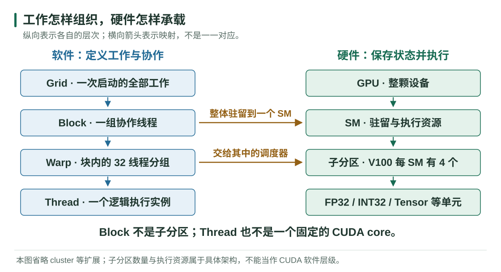
- 软件组织：grid（线程网格）是本次启动的全部工作；block（线程块）组织协作线程；块内线程按 32 个组成 warp（线程束），每个位置称为 lane（通道）。
- 硬件组织：GPU 包含多个流式多处理器 SM；图中以 V100 为例，每个 SM 内有 4 个执行子分区，每个子分区包含调度器和执行单元。
Block 整体在一个 SM 内执行；warp 由 SM 内的调度器管理。 SM、子分区都是硬件，不能插到 grid → block → warp → thread 中当成软件层级，也不能把一个线程等同于一个 CUDA core。
来源与延伸阅读
一次启动：8 个 block，怎样进入 SM
沿用逐元素任务：N=1000，每线程负责一个输出，每 block 128 个线程。需要 ceil(1000/128)=8 个 block；每 block 有 128/32=4 个 warp，共启动 1024 个线程。
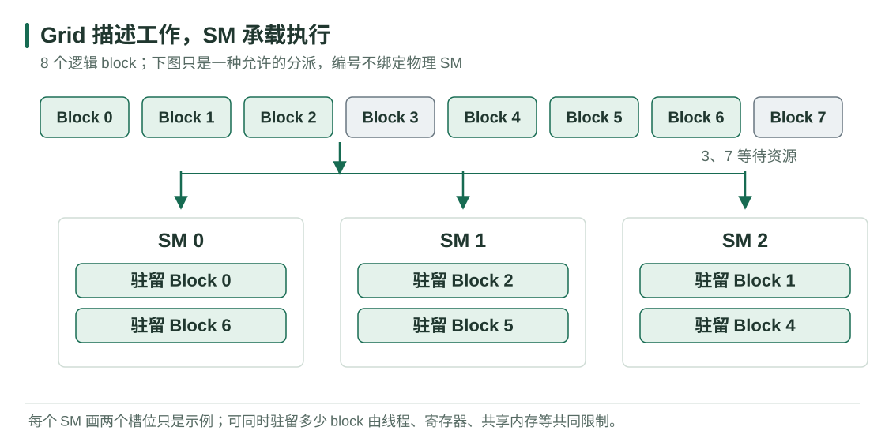
这是一台假想的 3-SM GPU在某时刻的一种允许分派。SM 0 同时驻留 block 0 和 block 6：共 256 个线程、8 个 warp；block 3、7 仍在等资源。它们不是按编号排到同编号的 SM。
一个 block 的线程不会拆到两个 SM 上执行；一个 SM 却可以容纳多个 block，前提是寄存器、共享内存、线程数及 block 数等预算都允许。驻留表示状态和资源已分配，不表示这些线程在同一周期全部计算。
多出的 24 个线程由 if (i < N) 屏蔽读写。逻辑编号不随实际分派改变，所以下一页可以直接定位输出 y[777]。
把输出 y[777]，定位到具体的 lane
先采用“一线程负责一个输出”的一维映射。N=1000、每 block 128 线程，需要 8 个 block，共启动 1024 个线程。
int i = blockIdx.x * blockDim.x + threadIdx.x;
if (i < N) y[i] = p(x[i]);
一维 grid / block，共启动 8 blocks、1024 threads；浅灰斜线标记无有效输出的线程。这里表示逻辑编号，不表示这些 block 正在同时驻留，也不指定它们被分配到哪个 SM。
Q12 · 讨论
i=777 对应哪个 block、块内 warp 与 lane？如果把每 block 改为 256，哪些编号改变，哪些计算结果应保持不变？
Q12
128 线程/block 时，blockIdx=6、threadIdx=9、块内 warp=0、lane=9；256 时，blockIdx=3、threadIdx=9、warp=0、lane=9。grid 从 8 块变为 4 块，均覆盖 1024 个线程。改变组织方式不应改变每个有效输出的数学定义，但会影响调度和资源分配。
SIMT：线程各有状态，硬件成组推进
现在把前面的两层概念接到 GPU：SPMD 是“同一份 kernel 程序、不同线程编号和数据”；SIMT（Single Instruction, Multiple Threads，单指令多线程）让硬件把线程成组推进。 kernel 就是在 GPU 上由许多线程执行的函数。
CUDA 线程各自保有寄存器状态和分支条件，warp 用活跃掩码组织指令执行。32 是 NVIDIA warp 的逻辑线程宽度，不保证某种指令用 32 个物理 ALU 在一个周期完成。
不同指令路径可以有不同的发射率、物理执行宽度与结果延迟；其他厂商也不必采用相同分组。
现代NVIDIA硬件支持独立线程调度，不能把“同warp”当作隐式的跨线程内存同步。共享数据时仍应遵守相应同步原语与参与集合的契约。
来源与延伸阅读
Q13 · 讨论
“一个CUDA线程就是一个CUDA core”和“同warp无需同步”各错在哪里？
Q13
前者把逻辑执行实例与硬件算术单元绑定；线程会分批执行，指令还可能使用不同功能单元。后者把成组执行误当作内存通信的正确性保证。协作读取其他线程写入的数据时，必须满足规定的同步与可见性条件。
先看整颗 GPU：重复出现的 SM 与共享的数据通路
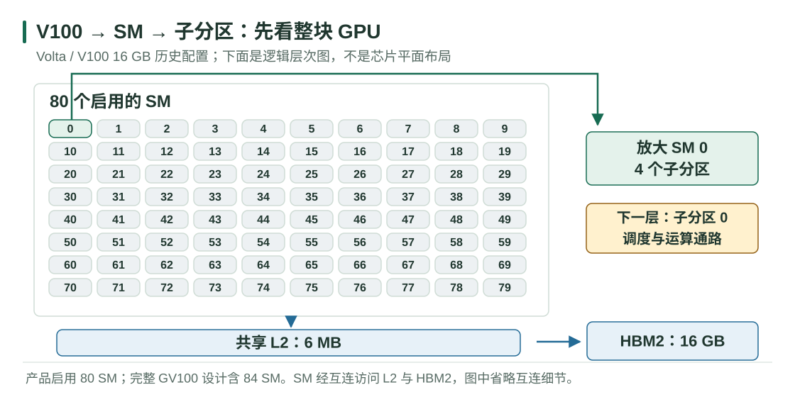
这张层次图以 NVIDIA V100（Volta，2017） 为例：上方是重复的 SM，下方是共同连接的二级缓存（L2，Level 2 Cache）与 HBM。
每个 SM 都能推进工作，但整个芯片的执行还依赖数据通路。SM 数量增加，不代表每个 SM 都拥有一套独享的全芯片 HBM 带宽。
图中的 80 SM、6 MB L2、16 GB HBM 是这一历史配置，不是所有 GPU 的固定参数，也不是第一讲 H200 的规格。
放大一个 SM：指令、状态、数据与执行单元
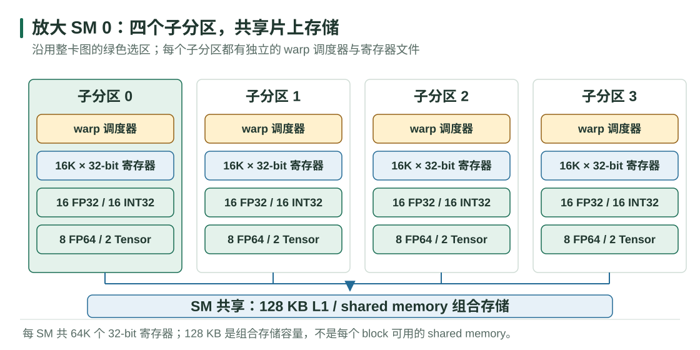
V100 的一个 SM 有 4 个执行子分区（processing sub-partition）。每个子分区有自己的 warp 调度器、寄存器文件（register file，即寄存器集合）和一组算术执行资源；它不是一个 CUDA block，也不是另一颗完整的 SM。
按颜色读图：蓝色保留线程状态，金色挑选就绪指令，绿色执行操作。例如一个子分区的 16 个 FP32 单元，不是“最多容纳 16 个线程”，而是这条浮点执行路径的硬件资源。
四个子分区共享 SM 级的一级缓存（L1，Level 1 Cache）与共享内存（shared memory）相关物理资源。共享内存用于 block 内协作；同驻留一个 SM 的不同 block，并不会因此获得彼此共享内存的访问权。
图中 128 KB 是 L1 / shared memory 的组合容量，不能直接当成每个 block 可申请的共享内存上限。硬件单元数和容量随代际变化，读图时先看职责与连接。
来源与延伸阅读
两个 block 的 8 个 warp，怎样使用四个子分区
现在放大 SM 0。沿用 block 0 和 block 6，每块 128 个线程、4 个 warp。图中 B6.W0 表示 block 6 内的 warp 0，不要把不同 block 的 warp 0 混成同一组。
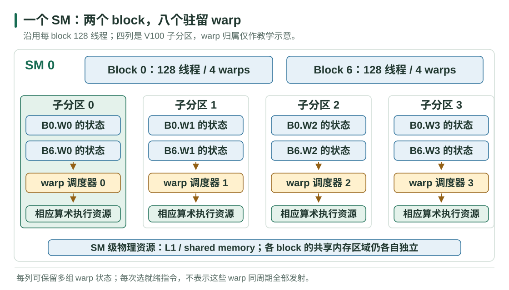
V100 的每个调度器管理一组固定的驻留 warp，并向相应算术资源发射指令。图中将 B0.W0、B6.W0 分给调度器 0，只是一种帮助理解的示意，不是 CUDA 保证的 warp 编号取模规则。
由此可见：一个 block 可以使用多个子分区；一个子分区也可以管理来自不同 block 的多个 warp。 同一 block 的四个 warp 不必同时发射，也不必保持相同执行进度。
来源与延伸阅读
再放大一步：32 个线程，为什么不等于 32 个同类 ALU
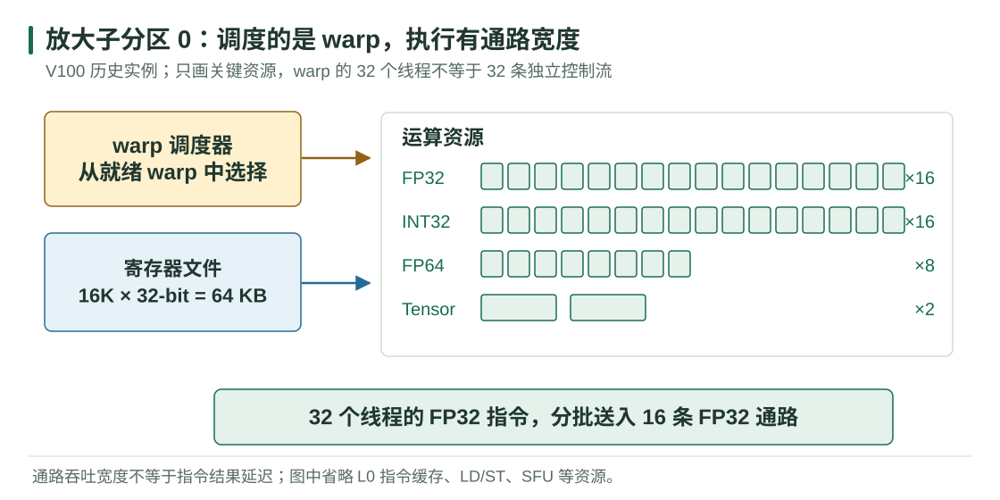
接着放大刚才的子分区 0。一个 V100 子分区有 16 条 FP32 运算通道，图中同时画出 INT32、FP64 和 Tensor Core；为突出层次，省略了加载/存储（load/store）和特殊函数单元（SFU，Special Function Unit）等资源。
对图中的普通 FP32 向量算术路径，32 个线程的一条 warp 指令需要跨两个周期供给 16 条通道。Warp 的逻辑宽度、执行通道数、指令发射率、结果延迟需要分别读取。
这里的发射按一条 warp 级指令计：它让参与的线程成组执行操作，不是让 32 个线程各占一个发射槽。讨论每周期的发射能力时，还要说明是在看一个调度器、一个子分区，还是整个 SM。
一个线程执行 load、整数地址计算和浮点乘法时，会使用不同资源；它不会永久绑定到某一个“CUDA core”。
Q14 · 讨论
依据这里的 16 条 FP32 通道，能否推断一个 warp 的任何指令都需要两个周期完成？
Q14
不能。这个例子限定了 V100 子分区的普通 FP32 路径与供给吞吐。不同指令使用不同功能单元；即使是同一条 FP32 指令，完成延迟也不等于供给通道所需的周期数。
从 V100 实物放大：把刚才的硬件概念对上位置
沿着 模组 → 整颗 GPU → 一个 SM → 一个执行子分区逐层查看 NVIDIA 官方原图。实物照片用于辨认部件，结构图用于理解内部职责；结构图的框和面积不等同于芯片的物理版图。
原图出处与标注说明
NVIDIA Tesla V100 GPU Architecture · WP-08608-001 v1.1 (2017) · PDF 第 28 页
从厂商公开资料提取图区；保留原图内容。中文框选、编号与解释为本课程添加；原图版权归原权利人。
打开未标注原图 ↗先找到封装内的高带宽显存 HBM2（High Bandwidth Memory，第二代高带宽内存），再找到芯片上的 L2、SM 内的寄存器与共享内存：它们的容量、作用域和访问代价不同。
原图中的完整 GV100 设计有 84 个 SM，本课前面的 V100 产品配置启用 80 个。 子分区图中每份寄存器文件为 16,384 × 32 bit = 64 KiB，四份合计 256 KiB；不能把“寄存器个数”直接当成字节数。
block、warp、线程是运行时组织起来的工作，不是照片上额外焊接的器件。 回到 y[777] 时，应追踪它使用哪些硬件资源，而不是给它找一个永久所属的 CUDA core。
跟着输出 y[777]，走一次 SM 内的数据路径
在前面的示意分派中，i=777 属于 SM 0 上的 block 6、warp 0、lane 9：777=6×128+9。程序能确定后面三个逻辑编号，但不能由 i 推断实际 SM 编号。
此页把逐元素函数简化为平方加 1，观察每种操作使用什么资源：
float v = x[i];
float r = v * v + 1.0f;
y[i] = r;
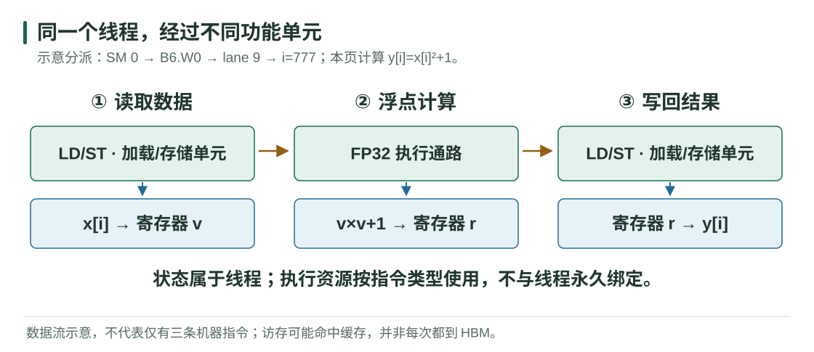
v、r 是这个线程自己的值；同一 warp 的其他线程使用各自的数组下标和寄存器值。普通 FP32 乘加走相应算术路径，不会因为 SM 有 Tensor Core，就自动变成矩阵乘法指令。
若 load 尚未返回，依赖 v 的计算就要等；状态仍然驻留，调度器可以选择它所管理的其他就绪 warp。这与前面 SMT 的延迟隐藏思想相通。
调度器真正挑的是“下一条可以执行的指令”
继续观察刚才的分派。某一时刻，子分区 0 的调度器面前有什么可选工作？
| Warp | 下一步所需状态 | 调度器 0 能否选择 |
|---|---|---|
| B6.W0 | 要计算 v*v+1，但 v 的 load 未返回 | 不能，依赖未满足 |
| B0.W0 | 输入已就绪，等待发射 | 可以成为候选，还需执行资源可用 |
| B6.W1 | 输入也已就绪，但归图中的调度器 1 管理 | 不在调度器 0 的候选集合中 |
计分板（scoreboard） 跟踪寄存器等依赖是否满足；调度器还要检查发射与执行资源。等数据的 warp 仍保有状态，无需像 OS 线程切换那样先保存到内存，再恢复另一个 warp。
驻留 → 就绪 → 被选中发射，是三件事。 即使所有 warp 都驻留，仍可能因数据、屏障或执行端口限制而没有可发射指令；更多驻留 warp 只增加候选，不保证每周期都有工作。
块内可以协作，跨块不能随意互等
上一页说调度器按 warp 选择指令，为什么这里又谈 block？两者负责不同层次：先按 block 安排驻留，再按 warp 推进指令。
| 层次 | 硬件安排什么 |
|---|---|
| Block：安排驻留与资源 | 普通启动中，一个 block 的全部线程安排在同一个 SM，并获得所需的寄存器、共享内存等资源 |
| Warp：安排指令执行 | 从已经驻留的 warp 中选择就绪指令；同一 block 的各个 warp 不必同周期执行，也不必保持相同进度 |
块内协作：等本组把数据准备好
以一个有 128 个线程、4 个 warp 的 block 为例。如果它们要合作搬入 128 个数，可以每个 warp 负责 32 个数，写到本 block 共用的工作区——共享内存（shared memory）。
使用其他线程搬来的数据前，先经过块内屏障（block barrier）：本例要求这 128 个线程都完成搬运、到达屏障，再继续使用整份数据。warp 即使分布在同一 SM 的不同子分区，也仍属于这个 block。
本 block 的屏障只协调本 block。 另一个 block 即使也在这个 SM 上，仍有自己的共享内存区域，不会自动加入本块的屏障。
跨块互等：有些 block 可能还没有开始
仍看前面的 8 个 block。为了突出问题，换成一台只有 1 个 SM、资源最多同时容纳 2 个 block 的假想 GPU；假设先装入 B0、B1，其余 B2～B7 等待资源。
假如程序要求“每个 block 报到后，必须等齐全部 8 个，才允许退出”：

B0、B1 报到后，计数到 2；它们还在原地反复检查“是否到 8”，占着资源。剩余 6 个 block 没有资源开始执行，自然无法报到。已经运行的等尚未运行的，尚未运行的又等前者退出，程序就可能一直停在这里。
块内屏障与这个反例的关键区别是：同一 block 的伙伴已经一同被安排到这个 SM；不同 block 没有保证会同时驻留。 普通启动也不保证按 block 编号的顺序执行。
若需要“所有 block 做完第一阶段，再开始第二阶段”，一种清楚的做法是拆成两次 kernel 启动，并保证第二次在第一次完成后执行。
因此，下一页要先算清：寄存器、共享内存等资源，究竟允许多少个 block 同时驻留？
Occupancy：先算状态能住下多少
假想 SM：65,536 个 32 位寄存器、64 KiB 共享存储、2,048 线程、64 warps、16 blocks。忽略资源分配粒度及芯片特有限制，只算驻留上限，不预测发射率或性能。
理论 occupancy = 可驻留 warp 数 / 该 SM 支持的最大驻留 warp 数。这里计算资源允许的上限；实际运行中的占用和活跃情况仍需测量。
Q15 · 讨论
默认 256 线程/block、32 寄存器/线程、16 KiB 共享存储/block 时，最紧约束是什么？若寄存器增到 96 呢？
Q15
默认寄存器允许 8 块，线程和 warp 上限允许 8 块，共享存储只允许 4 块，因此驻留 4 块、32 warps，理论 occupancy 为 50%。寄存器增到 96 后：
此时只能驻留 16 warps，理论 occupancy 降为 25%。真实硬件还需考虑分配粒度与具体上限。
驻留量会跳变：多一个寄存器的边际成本
假想 SM 有 65,536 个 32 位寄存器，最多 2,048 线程；block 为 256 线程，shared 和 block 数限制暂不起作用。先忽略真实分配粒度。
| 每线程寄存器 | 每 block 需求 | 寄存器允许的 block | 线程 occupancy |
|---|---|---|---|
| 32 | 8,192 | 8 | 100% |
| 33 | 8,448 | 7 | 87.5% |
| 64 | 16,384 | 4 | 50% |
| 65 | 16,640 | 3 | 37.5% |
取整使资源曲线出现台阶。实际硬件还按规定粒度分配，应该用编译报告和 occupancy 查询接口（API，Application Programming Interface，应用程序编程接口）核对具体 kernel。
寄存器、tile 与驻留量，要一起权衡
上一页说明：每线程少用一点寄存器，可能多住下一个 block。但要判断快慢，还要看省下资源的同时，是否增加了搬运或计算。
大 tile：一份输入为什么能多用几次
回到矩阵乘法 。这里的 tile（数据块） 是一个 block 负责的矩形输出区域：协作搬入 A、B 的一部分，重复使用它们，逐步累加 C。
只看求和中的一个 ：A 的一个值用于多个输出列，B 的一个值用于多个输出行。
| 输出 tile | 本轮需要的输入值 | 本轮完成的乘加更新 | 每个输入值使用几次 |
|---|---|---|---|
| A 的 4 个值 + B 的 4 个值 = 8 个 | 16 次 | 4 次 | |
| A 的 8 个值 + B 的 8 个值 = 16 个 | 64 次 | 8 次 |
输入只增加 2 倍，乘加更新增加 4 倍。 这是更大 tile 提高复用的来源；表中只数这一轮 A/B 输入，不是整次 kernel 的显存流量。
代价一：片上空间与边界空位
输入暂存到共享内存、输出的部分和（尚未累加完的结果）通常保留在寄存器中。tile 变大，往往需要更多空间；若 block 的线程数不变，每个线程还可能要保留更多部分和。
沿用前面的 64 KiB 共享内存、256 线程/block。单独比较每块占用 16 KiB 与 32 KiB，假设其他限制不更紧：
| 每 block 共享内存 | 同时驻留的 block | 驻留 warp |
|---|---|---|
| 16 KiB | ||
| 32 KiB |
每块占得更多，能一起驻留的块就可能更少。 这是独立的资源预算示例，不是上表小 tile 的实际存储量。
边界也要算。只看长度为 300 的一个维度，使用固定宽度分块：
| tile 宽度 | 分块后的有效长度 | 最后一块的空位 |
|---|---|---|
| 128 | ||
| 256 |
这些空位要用边界掩码关闭访问，或在适当实现中补零。分配的 tile 位置不一定都产生有效输出；空位数也不等于实际执行的无用指令数。
代价二：寄存器压得太少，中间值放哪里
寄存器溢出（register spill）指编译器因寄存器不足等约束，把部分仍需使用的中间值安排到内存中保存；这与数值超出表示范围的“溢出”不同。
常见路径是局部内存（local memory）：local 表示“每个线程私有”，不表示物理上靠近计算单元。它由设备显存支撑、可以经过缓存，和 block 共用的共享内存是不同概念。

更大的部分和数组、同时保留更多中间结果，或强行降低寄存器上限，都可能引起这种额外存取。即使命中缓存，也增加了指令和数据访问；未命中还可能访问显存。不是每次 spill 都必然读写 HBM，也不是寄存器用得多就一定发生 spill。
最终要比较正确任务的完成时间：复用节省的搬运、驻留减少的候选工作、边界空位和 spill 的开销，要放在一起判断。下一页再看：独立工作来自更多 warp，还是同一线程里的多条计算链。
两种隐藏延迟的预算：线程多，还是每线程多做
同一份总任务，可以分给更多线程，也可以让每个线程承担更多独立工作。比较同一个 SM 上的两种假想安排；一条链内部必须等前一步结果，不同链可以交错推进。
| A：更多 warp | B：每线程更多独立链 | |
|---|---|---|
| 驻留 warp | 8 个 | 4 个 |
| 每个 warp 执行的独立链 | 1 条 | 3 条 |
| 潜在独立链总数 | ||
| 隐藏等待的主要来源 | 一个 warp 等待，换另一个就绪 warp | 同一线程的另一条链可先推进，也能换 warp |
| 主要代价 | 为更多线程保留上下文与寄存器 | 每线程保留更多中间值，可能增加寄存器压力与 spill |
B 中的“3 条链”可以是每个线程分别更新三个互不依赖的部分和；对应的指令仍按 warp 成组执行。它不是把一个 warp 拆成三个调度单位。
哪个更好：看等待是否已经被填满
给出一个理想化发射模型：每周期最多发射一条这类 warp 指令；流水执行单元能每周期接收一条，但一条链必须等 个周期才能发射下一步。各链交错排程，先忽略访存、spill 和其他限制。
| 结果延迟 | A：8 条独立链 | B：12 条独立链 |
|---|---|---|
| 12 周期 | 每 12 周期最多填 8 个发射机会，约 67% | 有机会填满每周期的发射机会，100% |
| 4 周期 | 有机会填满，100% | 也有机会填满，100% |
第一行 B 的独立工作更多，能填补 A 留下的空档；第二行两者都已足够，额外独立链不会继续提高这一条发射通路的吞吐。百分比是这个模型的发射上限，不是 GPU 实测利用率。
如果线程内部很难找到独立链，A 更容易提供其他候选工作。如果能以较小的寄存器成本保留多条链，B 可能用较少的驻留 warp 隐藏等待。但 B 一旦引入大量 spill 或额外计算，收益就可能被抵消；两者若都受带宽限制，也不能靠加链突破带宽上限。
8 与 12 是潜在独立工作的数量，不是同时发射数，更不是确定的快慢排名。 实际设计可以同时利用两种方式，比较依据仍是同一任务的完成时间。
合并访存：32 个地址怎样组成一次成组访问
先固定 32 个线程全部参与同一次读取，只改变它们的地址排列：连续、错位或分散，分别需要覆盖多少个扇区？交互中选中一个 lane 只是高亮查看它的地址，其余线程仍参与读取。
lane 0 → x[0] → 字节地址 0 → 扇区 0 中第 0 个 FP32
假设 FP32、基址按 32 B 对齐，每个绿色小格为一个被请求的 4 B 元素；单次 warp load 按地址覆盖计算。计数对应合并访问的 32 B 扇区模型，不等于缓存未命中数、DRAM 实际流量或加速比。
这里采用现代 NVIDIA 全局内存访问常用的 32 B 扇区计数模型（计算能力 6.0 及以上的相关规则）。相邻线程访问相邻元素，通常能减少一次请求涉及的扇区。
只有4个线程参与，也要看地址是否集中
上一页是 32 个线程全部参与，只改变地址排列。这一页增加一个条件：由于边界或分支掩码，只有 lane 0～3 执行这次读取，另外 28 个线程不请求数据。
仍假设 FP32、基地址按 32 B 对齐，按 32 B 扇区（sector）计数。每个参与线程读取一个不同的数，两种情况的有效数据都是 。
| 这4个线程读取哪里 | 扇区覆盖字节 | 请求利用率 |
|---|---|---|
集中：x[0]、x[1]、x[2]、x[3] | ||
分散：x[0]、x[8]、x[16]、x[24] |
第一行的 16 B 集中在一个扇区内；第二行相邻请求相隔 ，因此分别落入四个扇区。
两个比例，分母不同
- 活跃线程比例：参与本次读取的线程数 ÷ warp 的 32 个线程。两行都是 ，回答“有多少线程参与”。
- 请求利用率：有效请求字节 ÷ 涉及扇区的覆盖字节。两行分别为 50% 与 12.5%，回答“覆盖的字节中，有多少真正被请求”。
参与线程同样少，地址集中仍能减少涉及的扇区。 活跃线程比例与访存请求利用率不能混为一谈；这些比例也不是最终 HBM 流量或程序加速比。
下一页再看：数据布局怎样让相邻线程取到相邻地址。
AoS 与 SoA：布局决定邻居们能否一起取数
一个粒子有 x、y、z 三个 FP32 字段。保存许多粒子时，有两种常见布局：
- AoS（Array of Structures，结构体数组）：按粒子排列，每个粒子的 x、y、z 放在一起，如
(x0,y0,z0), (x1,y1,z1), …。 - SoA（Structure of Arrays，由多个数组组成的结构体）：按字段排列，所有 x 放一个数组，所有 y、所有 z 各放一个数组。
现在每个线程只更新一个粒子的 x，比较两种布局中的读取地址：
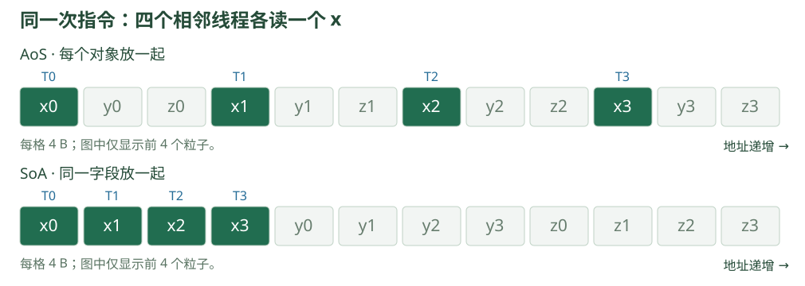
在图示无填充、对齐布局中，一个 warp 读 32 个 x：AoS 地址跨度为 12 B，触及 12 个 32 B 扇区；SoA 触及 4 个。若每个线程要读取所有字段，或转换布局成本很高，结论就需要重新评估。
只读 x 与同时读 xyz，布局优势可能改变
假定无 padding 的 struct Particle { float x,y,z; };。32 个相邻粒子占 384 B。
只读 x 时，AoS 地址相隔 12 B，可能覆盖 12 个对齐 sector；SoA 的 32 个 x 只需 4 个 sector。若随后紧接着还读 y、z，AoS 已取得的缓存内容可能继续有用。
比较范围要覆盖真实消费字段。 只分析第一条 load 会夸大某些布局变换的收益；把 AoS 转成 SoA 本身也有读写成本。以小块为单位组织 SoA 的 AoSoA，可兼顾组内连续与对象分块管理。
SM 内能住满，也不代表整颗 GPU 都有工作
理论 occupancy 主要描述 SM 内的资源上限；grid 太小或最后一批 block 太少，还会留下整片空闲资源。
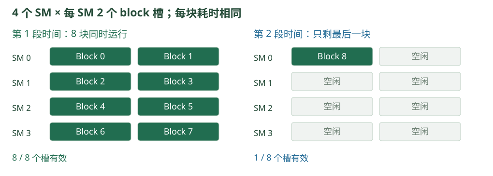
假设 4 个 SM 各能同时执行 2 个 block，每个 block 独立且耗时相同。8 个 block 恰好一批；第 9 个要等一个槽位释放，最后只剩它还在工作。
Q16 · 讨论
在这个理想模型中，9 个 block 的平均槽位利用率是多少？这与前面 50% 的理论 occupancy 是同一个分母吗？
Q16
总时长为两个 block 时间，共有 4×2×2=16 个“block 槽×时间”，9 个有效工作占 9/16=56.25%。它描述全芯片在整段执行中的供给与尾部；理论 occupancy 的分母是单 SM 支持的最大驻留 warp 数，二者不同。
最后一波的尾部：用小网格算整卡利用率
沿用上一页的假想 GPU：4 个 SM，每个同时容纳 2 个 block，整卡共有 8 个 block 驻留位置。每个 block 的执行时间相同，记作 ，不考虑调度开销。
用 表示 block 总数， 表示波数， 表示总执行时间。每波最多处理 8 个 block，因此：
表示向上取整。例如 9 个 block 要分成“8 个 + 1 个”两波，。每波耗时 ，所以：
槽位平均利用率记作 ：所有 block 实际占用的“槽位 × 时间”为 ；8 个驻留位置在整段执行中的总容量为 。
| block 总数 | 波数 | 总时间 | 槽位平均利用率 |
|---|---|---|---|
| 8 | 1 | ||
| 9 | 2 | ||
| 16 | 2 | ||
| 17 | 3 |
总时间由需要几波决定，利用率还要看最后一波有多少空位。 这里的槽位是 block 驻留位置；这个比例不等于运算单元忙碌率。若 block 时长不同、共享带宽或资源随配置改变，就需要修正这个等时模型。
从现象到性能判断
回到同一个任务：先算清工作量与数据量
仍然对 100 万个 FP32 输入分别计算 y[i]=p(x[i])，其中 p(v)=((v+2)v+3)v+4。输入只读，输入输出不重叠，每个输出只由一个线程负责，越界线程不读写。
| 记账项目 | 这个任务里能先确定什么 |
|---|---|
| 工作的独立性 | 不同输出可以并行；同一个输出内部有乘加依赖链。 |
| 浮点运算量 | 按三次乘加记账：每输出 6 FLOPs，合计 600 万次浮点运算。 |
| 基本数据量 | 每输出读一个 FP32、写一个 FP32：4 + 4 = 8 B；各读写一次合计 8 MB。 |
| 计算强度 | 在上述读写模型下，6 / 8 = 0.75 FLOP/B。 |
这里保留首步的 1×v，编译器可能省去这次乘法；8 B 按输入输出各读写一次估算，真实显存流量还受缓存与额外访问影响。
这些数说明“要做多少工作”，还不能说明“执行时卡在哪里”。 上一页检查了是否有足够 block 分给各个 SM；接下来走进已接到工作的 SM，看执行为什么仍会空闲。
看见 GPU 没跑满，先定位空闲发生在哪一层
先假设工作已分到足够多的 SM，再区分三种限制：指令发不出来、有效通道少、数据供给到顶。 以下是不同程序的教学情境；B 回用前面的变长循环。
| 看到什么现象 | 限制可能在哪里 | 先检查什么、怎么改 |
|---|---|---|
| A · 许多周期没有发射指令。 驻留 warp 很多，但就绪 warp 很少，带宽也低。 | 指令在等待前置条件。 工作已经驻留，不代表现在能执行。 | 检查是否等加载结果或屏障；组织更多独立计算或访存来填补等待，同时留意寄存器等状态成本。 |
| B · 持续发射，但只有少数 lane 做有效工作。 同一 warp 内任务长短差异大。 | 成组执行时出现空位。 短任务已结束，只有长任务还在推进。 | 把长度相近的任务分到一起；收益要扣除重排开销，并检查新的分组是否让地址更分散。 |
| C · 算术单元不忙，但内存带宽已接近可持续上限。 请求并发已经充足。 | 数据供给速度限制了计算。 增加请求也难以让这条数据通路更快。 | 减少重复搬运、增加数据复用，或融合相邻操作以省去中间结果的写回与重读。 |
不能统一回答“增加线程数”。 它未必消除依赖、通道空位或带宽限制。改动时保持输出正确，尽量只改一个条件；最终比较包含新增开销的总时间，据此修正判断。
再看 GEMM：每个 tile 都要经过这些层次
一种常见设计是让 block 负责 C 的一个输出 tile：线程协作搬入 A/B 子块，使用 shared memory 与寄存器复用数据，沿 K 维不断累加。
更大的 tile 可能减少远端流量，也可能增加状态预算、减少驻留 block；双缓冲可重叠搬运和计算，也需要更多空间。
第一讲的 FLOPs / 字节数给出上界；第二讲的映射、就绪工作与资源预算，解释能否接近它。 具体的 warp 划分、矩阵乘累加指令（MMA，Matrix Multiply-Accumulate）和异步流水线，会在 CUDA 与现代 GPU 算子编程中展开。
同一组矩阵：追踪本次改变的执行方式
把每个 D[m,n] 映射到不同执行者；沿 k 的累加仍有依赖。分工变化不应改变矩阵的逻辑坐标。
1 2 3 4 5 6
7 8 9 10 11 12
? ? ? ?
一直保持 W[n,k]；第一讲 C=AB 中的 B，等于这里的 Wᵀ。改变分块只改变分组，输出含义不变。
手算与程序共用固定数据；这是逻辑模型，不表示硬件执行时序或实测性能。
本讲总结与概念辨析
本讲总结：从程序到硬件的四个问题
这一讲始终在回答：有很多工作，为什么执行资源仍然会空闲？ 把学到的概念放回四个问题，就能形成一张知识地图。
| 要回答的问题 | 本讲的概念 | 对应的程序决定 |
|---|---|---|
| 工作怎样分给执行者？ | SPMD；grid / block / thread；warp 分组 | 谁负责每个输出，任务有多细 |
| 哪些操作能一起推进？ | 指令级并行 ILP；SIMD；多核；SIMT | 打开独立链，安排组内数据与控制路径 |
| 一份工作等待时，谁能接上？ | 上下文；SMT；warp 调度；驻留 / 就绪 / 发射 | 提供已驻留且依赖满足的候选工作 |
| 数据与状态怎样放得下、取得到？ | 寄存器；缓存；共享内存；合并访存；occupancy | 平衡复用、地址布局、状态预算与搬运量 |
Horner 展示依赖链，指针追踪展示串行等待，分组与地址实验展示无效工作和搬运成本，GEMM 把这些约束放到同一个算子里。
第一讲估算工作量与数据量；第二讲解释这些工作如何被硬件实际推进。
概念辨析：这些“并行”分别在描述什么
| 概念 | 核心含义 | 最容易混淆的区别 |
|---|---|---|
| ILP · 指令级并行 | 同一线程有可重叠推进的独立指令 | 一条依赖链更快，与多条链交错是两件事 |
| SIMD · 单指令多数据 | 一条指令作用于多个数据通道 | 多个 lane 不等于多个独立核心 |
| 多核 | 多个物理核心分别推进工作 | 核心数与 SMT 的逻辑处理器数不同 |
| SPMD · 单程序多数据 | 多个执行实例运行同一程序、处理不同数据 | 这是程序组织方式，不保证同时执行同一条指令 |
| SMT · 同时多线程 | 同一核心的多个硬件上下文共同供给指令 | 共享核心资源，不会把核心的算术资源翻倍 |
| SIMT · 单指令多线程 | 硬件把有各自状态的线程成组推进 | 一个逻辑线程不固定对应一个 CUDA core |
这些概念可以叠加：同一份 C++ worker 程序体现 SPMD，多核并行运行这些 worker，每个 worker 的循环又可以被向量化为 SIMD。 CUDA kernel 同样可以用 SPMD 组织工作，由 GPU 按 SIMT 模型执行。
概念辨析：工作的身份、驻留位置与执行资源
软件组织：grid → block → warp → thread；硬件层次：GPU → SM → 子分区 → 执行单元。 横向建立映射，不能把两条线拼成一条包含链。
| 工作的组织 | 硬件怎样承载 | 必须保留的区别 |
|---|---|---|
| 一个 block | 普通启动中整体在一个 SM 内执行 | 一个 SM 可驻留多个 block；它们的共享内存区域仍独立 |
| 一个 block 的多个 warp | 可使用同一 SM 的多个子分区 | block 不等于子分区；具体 warp 到调度器的编号映射不是 CUDA 保证 |
| 一个 thread 的不同指令 | 使用寄存器、加载/存储与算术等资源 | 线程是有状态的执行实例，不是一个固定运算单元 |
再区分三个状态：驻留是已分配状态与资源；就绪是下一条指令的依赖等条件已满足；发射是被选中且获得所需发射与执行资源。
SMT 和 GPU warp 调度会在已驻留的工作中选择指令。OS 上下文切换则更换逻辑处理器承载的软件线程，需要保存与恢复其状态；这是另一个层次的操作。
概念辨析：几个百分比和“快”，测的不是同一件事
| 容易混用的量 | 分别在回答什么 | 本讲留下的判断 |
|---|---|---|
| 延迟 / 吞吐 | 一个结果要等多久 / 单位时间完成多少工作 | 交错独立工作可提高吞吐，单次等待仍可能很长 |
| 发射宽度 / 执行通道数 | 每周期最多发出多少条指令 / 一条指令可由多少数据通道处理 | 一次向量或 warp 指令发射可以带动多个 lane；槽数不等于线程数或通道数 |
| warp 宽度 / 执行宽度 | 一组有多少逻辑线程 / 某条路径有多少物理通道 | 32 个线程不保证任何指令都在一个周期完成 |
| 理论 occupancy / 执行利用率 | 状态最多能驻留多少 / 执行资源实际有多忙 | 住得多，只增加候选；还要有可发射工作 |
| 活跃 lane 比例 / 访存效率 | 多少线程参与 / 地址覆盖了多少内存区间 | 同样 4 个 lane，连续与跨距地址的搬运成本不同 |
| 合并访存 / 缓存复用 | 一次成组请求如何覆盖地址 / 后续访问能否重用已有数据 | 请求的扇区数不能直接当成整段程序的 HBM 流量 |
| 单 SM 驻留量 / 全芯片工作供给 | 一处能容纳多少 / 是否有足够 block 分给各处 | grid 太小或尾部太短，其他 SM 仍可能空闲 |
最终目标是正确任务的完成时间。 用这些量解释时间，用对照实验检验原因；不要把任意一个百分比单独当作优化目标。
最后自检：融合后驻留变少，还值得吗？
回到第一讲的 u=x+y、z=u*w：融合后，u 不必写回显存再读出。仍使用 FP32，u 没有其他使用者，各数组互不重叠，两个版本产生相同的正确输出，grid 都足够大。
现在加入硬件条件： 假设一个 SM 有 65,536 个 32 位寄存器，最多驻留 64 个 warp；每个 block 有 256 个线程，即 8 个 warp。只考虑寄存器和 warp 数上限。
| 已知条件 | 分开执行：两个 kernel 各自运行时 | 融合执行：一个 kernel |
|---|---|---|
| 完成全部 N 个输出的显存流量 | 24N B | 16N B |
| 每线程寄存器数（教学假设） | 32 | 64 |
流量沿用第一讲“各项必要读写一次”的模型；寄存器数只用于本题推演。
Q17 · 讨论
- 两种实现每个 SM 最多驻留多少 block、多少 warp？理论 occupancy 各是多少？
- 少搬数据与减少驻留带来了相反的影响。你会依据什么选择版本，为什么两个百分比都不能直接当作加速比？
Q17
| 驻留预算 | 分开执行的每个 kernel | 融合 kernel |
|---|---|---|
| 每 block 的寄存器 | 256 × 32 = 8,192 | 256 × 64 = 16,384 |
| 每 SM 最多驻留 block | 65,536 / 8,192 = 8 | 65,536 / 16,384 = 4 |
| 每 SM 最多驻留 warp | 8 × 8 = 64 | 4 × 8 = 32 |
| 理论 occupancy | 64 / 64 = 100% | 32 / 64 = 50% |
融合减少了三分之一的模型流量，也减少了一半的驻留 warp，但两者都不是时间的变化比例。
- 若 32 个 warp 仍能提供足够就绪工作、维持数据供给，减少搬运就有机会缩短时间。
- 若驻留减少后难以隐藏依赖等待，有效带宽也可能下降，搬运减少未必换来提速。
在相同输入、正确性要求和计时范围下，比较两个 kernel 的总时间与融合 kernel 的时间，再用就绪工作和实际流量解释差异。理论 occupancy 说明能住多少，不能单独决定执行快慢。
下一步：把工作划分和协作写成正确程序
完成总结后，设计并行程序就有了三项检查：
- 让工作独立且足够多：同时照顾核心分工、指令依赖、任务粒度与尾部。
- 让一组工作适合一起执行：兼顾访问地址、控制路径和协作范围。
- 让空间真正换来时间：平衡数据复用、独立操作、驻留状态与额外搬运。
逐元素 map 很容易确定输出所有权；归约、邻域更新、压缩筛选还需要组织通信和同步。第三讲将把这些工作写成完整的并行算法。